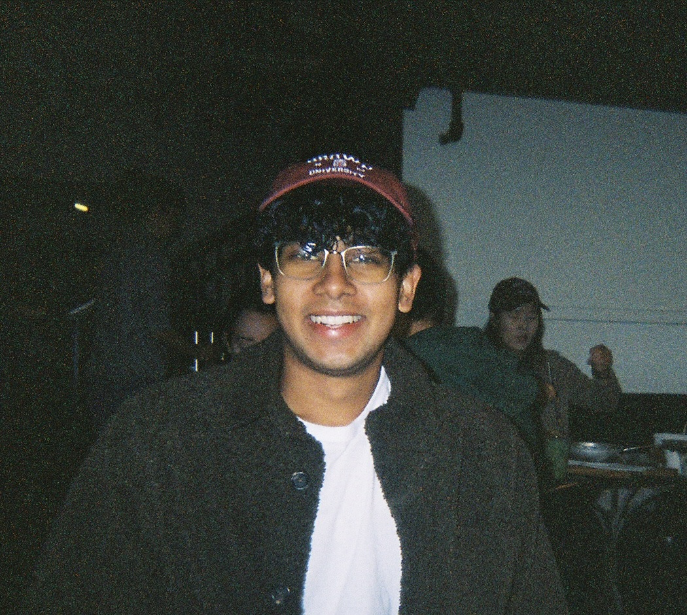

kunal handa

# about
Hi, I’m Kunal! I’m a senior at Brown University concentrating in computer science and linguistics. Below are some of the projects I have recently worked on plus some extra tid-bits I have dabbled in over the past few years. Feel free to poke around!
If any of this looks interesting or you just want to chat, feel free to reach out at:
kunal [underscore] handa [at] brown [dot] edu.
# at the moment
TODO
# past projects
Task Ambiguity in Humans and Language Models
Alex Tamkin*, Kunal Handa*, Avash Shrestha, Noah Goodman. Pending in the International Conference on Learning Representations (ICLR), 2023.
Peekbank: An open, large-scale repository for developmental eye-tracking data of children’s word recognition
Martin Zettersten… Kunal Handa… & Michael C. Frank. In Behavior Research Methods (BRM), 2022.
# musings
The Role of Technology in Elections: The Voyage of Voters’ Data
Kunal Handa. In Conduit, the Brown University Computer Science Annual Magazine, Volume 32, 2022.